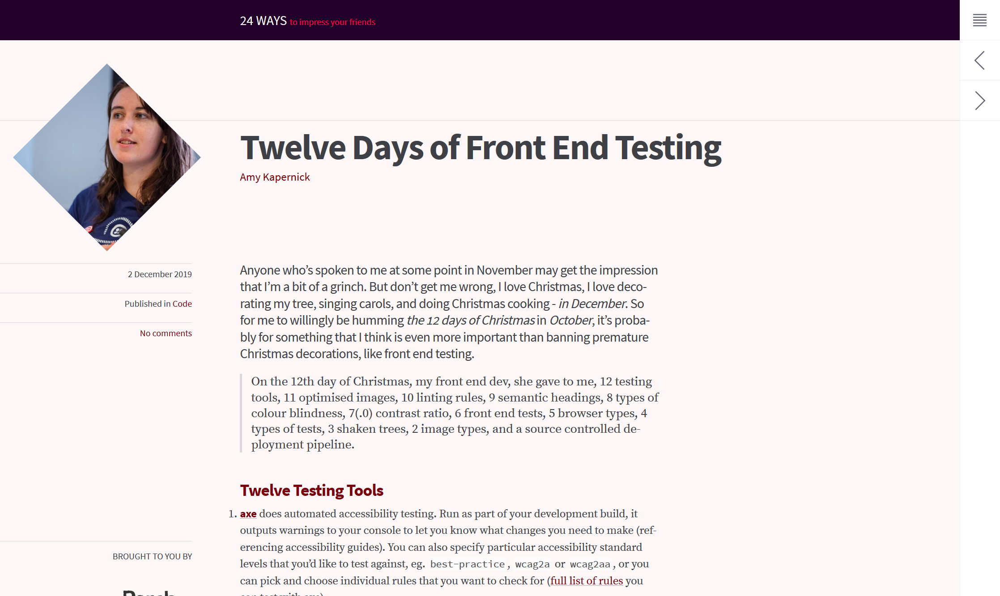
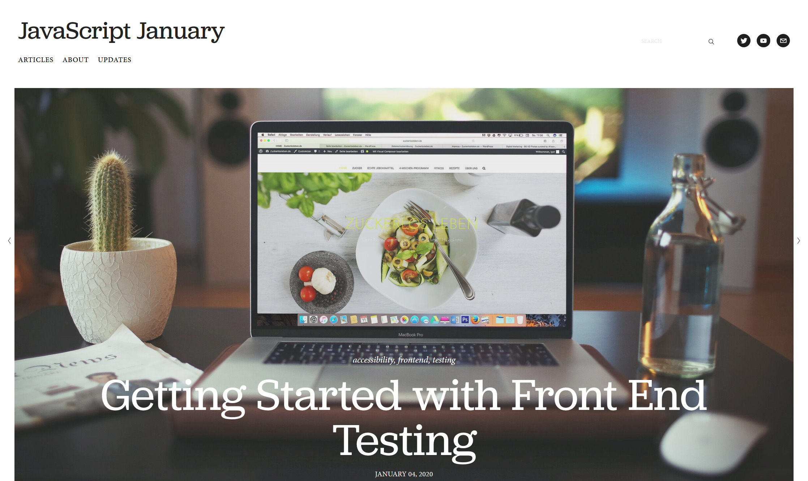

Wait...
So I have to test the front end too?
Wait...
So I have to test the front end too?
Why test?
What about the front end?
The front end matters too
Accessibility testing
Performance testing
User testing
HTML validation
Visual Regression testing
So I'm a testing expert?
No.
So why me?
Linting

https://24ways.org/2019/twelve-days-of-front-end-testing/

https://www.javascriptjanuary.com/blog/getting-started-with-front-end-testing